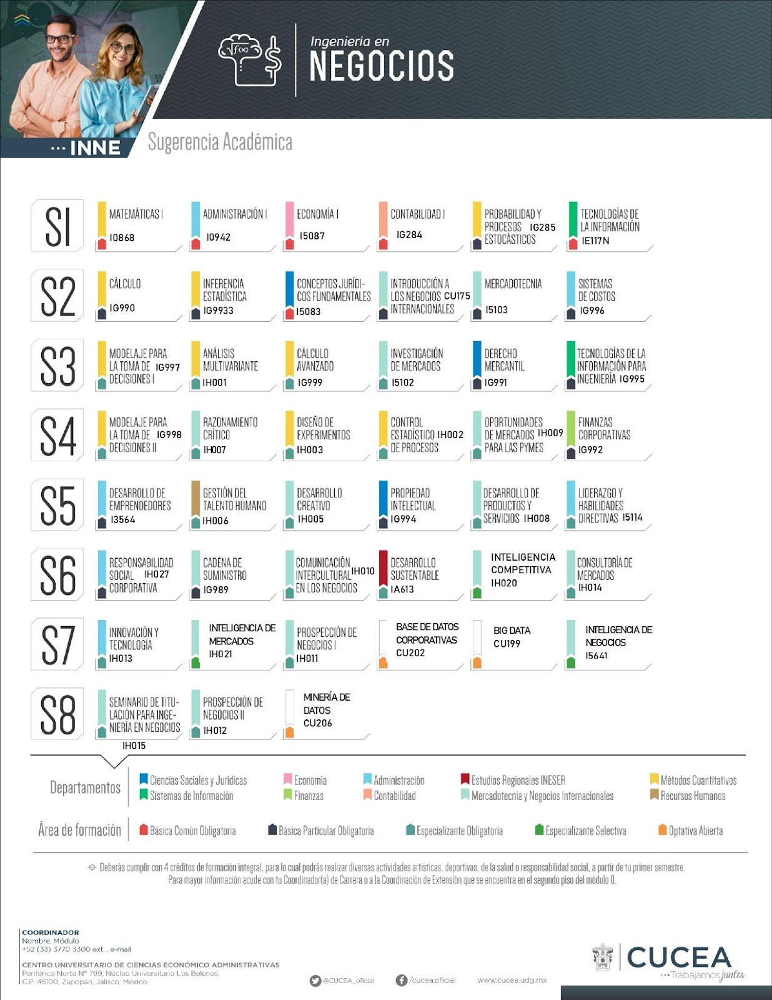

Portal de Soporte Informativo Oficial INNE
Conoce la ruta crítica de la Ingeniería en Negocios y su enfoque diferenciador.
A diferencia de Administración o Negocios Internacionales, el Ingeniero en Negocios optimiza procesos utilizando tecnología profunda, ciencia de datos, programación y modelos matemáticos aplicados.

Mantente al tanto de los procesos de la coordinación y alertas vigentes.
Conoce las vías oficiales de titulación (Excelencia, Promedio, Tesis) y los lineamientos vigentes actualizados. Inicia tu proceso de cierre académico con toda la información centralizada.
Si ya completaste el 60% de los créditos totales de la carrera, ya eres elegible para arrancar tu Servicio Social Institucional. Revisa las plazas y el calendario de sorteos oficiales.
Ya no necesitas hacer filas extensas. Recuerda que puedes iniciar tus solicitudes de justificantes, órdenes de pago y constancias directamente ingresando con tu correo y contraseña institucional.
Recuerda que no puedes reprobar la misma materia dos veces seguidas. Si dejaste una materia en ordinario, es obligatorio acreditarla en el extraordinario de este ciclo para evitar sanciones de agenda.
Aplica tus habilidades en optimización y analítica en las organizaciones líderes del ecosistema. Consulta los convenios vigentes, vacantes activas y lineamientos oficiales gestionados de forma directa por la Universidad.
Información inmediata editada desde la cuenta de Drive de la carrera.
Exámenes, trámites y cierres de agenda directo de Google Calendar.
Respuestas rápidas y directas a las dudas administrativas más comunes de la carrera.
Nuestra razón de ser, hacia dónde vamos y el perfil de nuestros ingenieros.
[Formar ingenieros con talento en ciencia, ingeniería y tecnología, en cumplimiento con los requerimientos estratégicos de México y Jalisco y para cumplir con la demanda de profesionistas de clase mundial con perfiles globales e internacionales. En un campo profesional innovador que ofrece opciones para el desarrollo de la industria y las organizaciones de negocios tales como: la aeroespacial, la electrónica, la biotecnología y de alimentación, la de tecnologías de la información, la de equipo médico, la de servicios entre otros. Teniendo en cuenta la necesidad de abordar las capacidades humanas, físicas, materiales y financieras para garantizar el desarrollo de las organizaciones.]
[Este programa educativo se creó con la intención de proveer profesionistas que intervengan en las organizaciones utilizando metodologías y modelos de análisis y optimización, sustentados en: innovación, eficiencia, eficacia, flexibilidad, uso intensivo de la tecnología para gestionar rubros tales como la competitividad, adaptación y resiliencia. Podrán desempeñarse en la sistematización de modelos de negocios en empresas privadas, en cualquier área funcional mediante la innovación en la gestión de la organización, con capacidad para incursionar en entornos complejos e interdependientes, aprovechando y usando de manera intensiva, las tecnologías actuales y canalizando la energía de las personas.]
[Formar integralmente ingenieros de alto nivel con la capacidad de comprensión y aplicación de las ciencias económico-administrativas y exactas, con énfasis en los negocios y mercados.]
[Capacidad analítica; Pensamiento emprendedor; Habilidades en la comprensión y el uso de las tecnologías de la información; Habilidad y lógica matemática; y, Gusto por el desarrollo tecnológico y científico.]
[Está orientado a la aplicación del pensamiento analítico, integral y sistémico para la detección de problemas y el diseño de estrategias de solución con el apoyo de nuevas tecnologías, es capaz de tomar decisiones para la innovación de productos, servicios, comercialización, procesos, estructuras organizacionales. Aplica modelos de ingeniería y optimización de negocios. Impulsa la competitividad de las empresas a través de la creatividad, la disrupción, la flexibilidad y el aprendizaje permanente en la administración del cambio organizacional.]